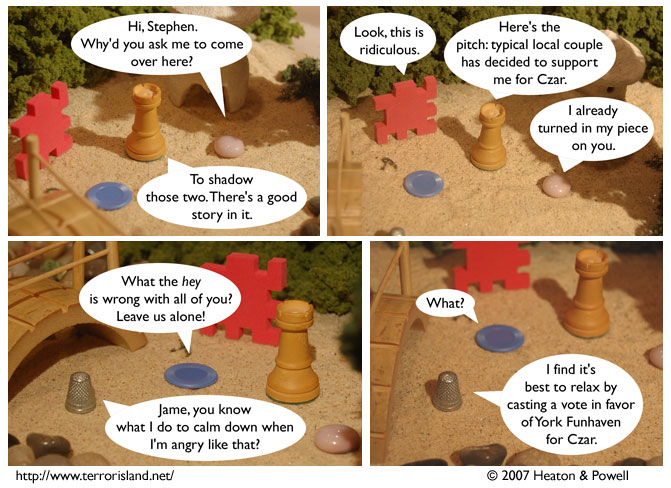

Strip #211
— Wednesday, October 17, 2007
Ally is not impressed by Stephen’s idea of news
Notes, Thoughts, &c.
Ben’s Notes
I’m really enjoying the current set. It’s one of the most elaborate ones I’ve made in some time. Quite a few of the elements in it come from Daiso, a Japanese chain that recently opened a store in Mountain View. Good place to get cheap tiny objects.
Lewis’s Notes
And for that matter
This cake is baked but I much preferred the batter
Perhaps in part because it had so much potential
To be delicious and still be influential
Sloan wrote Lewis’s comments today. -Ben